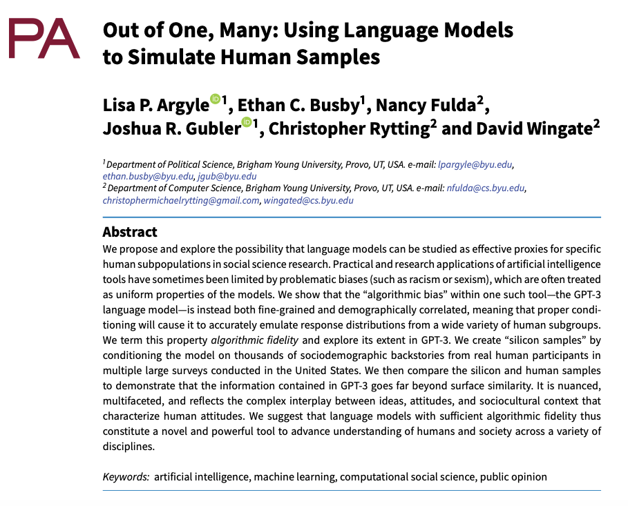
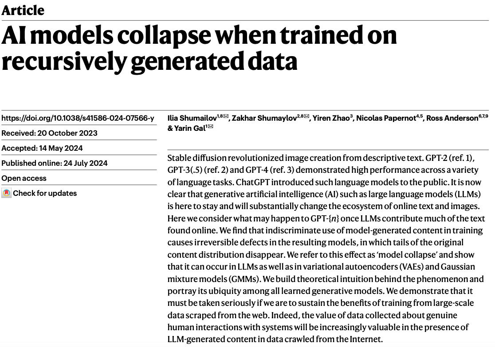
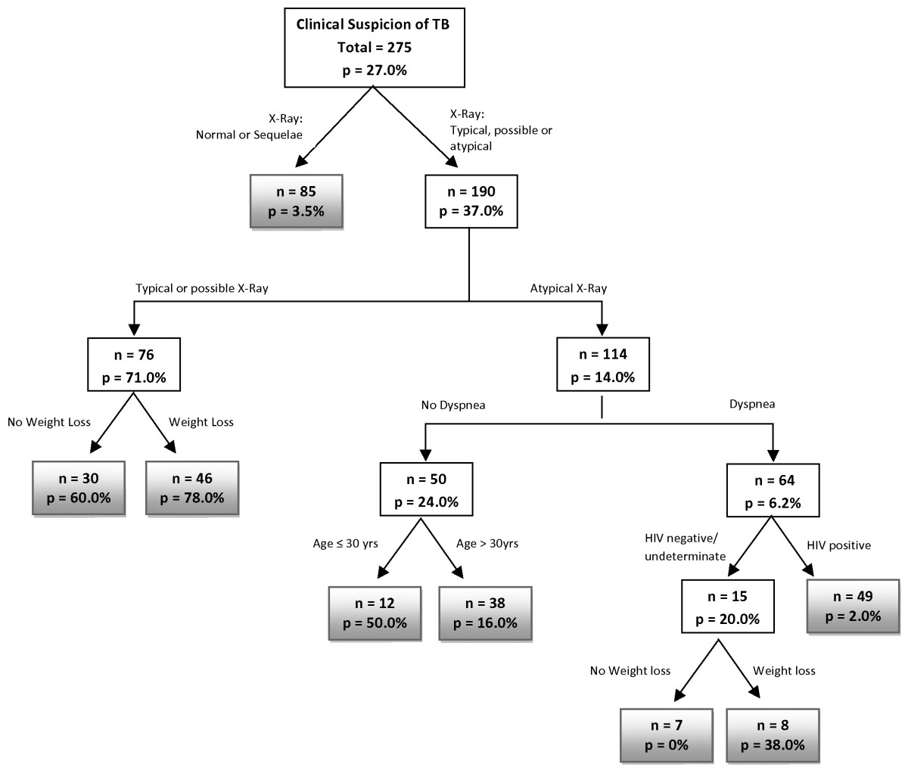
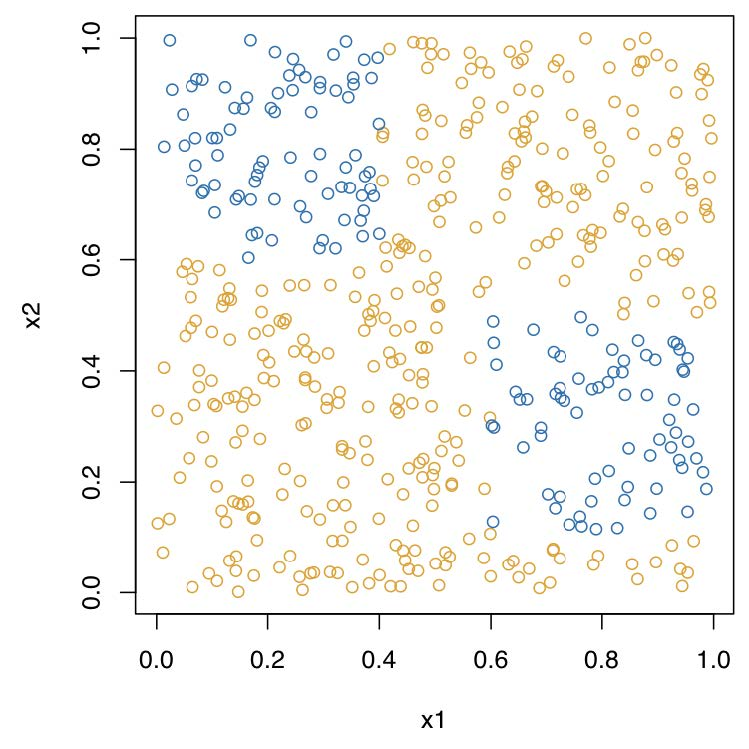
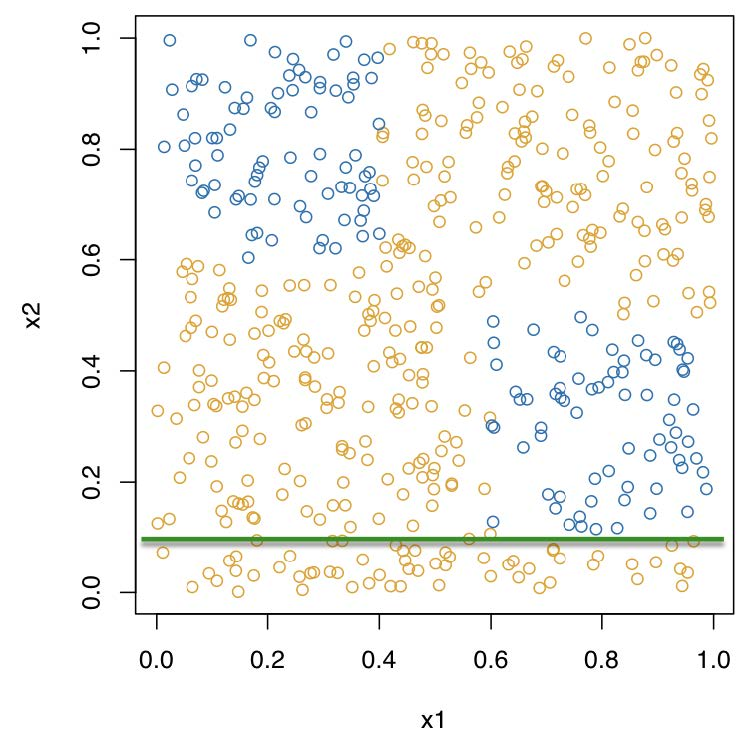
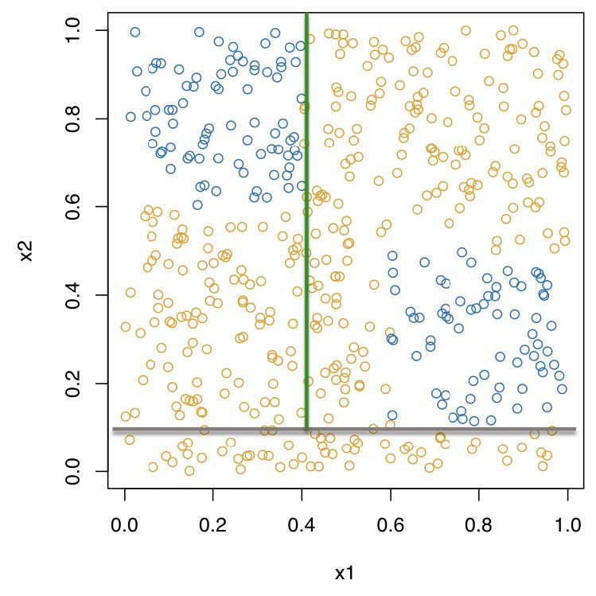
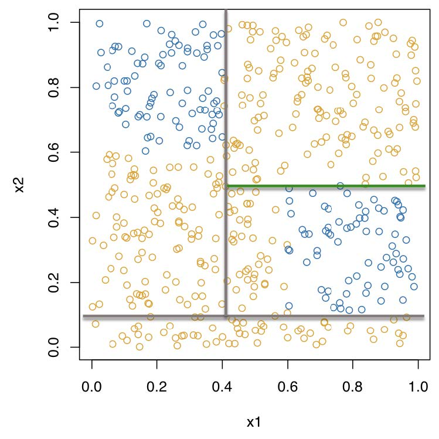
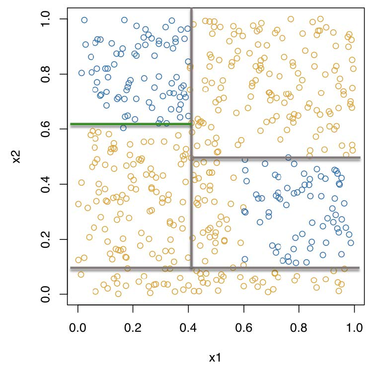
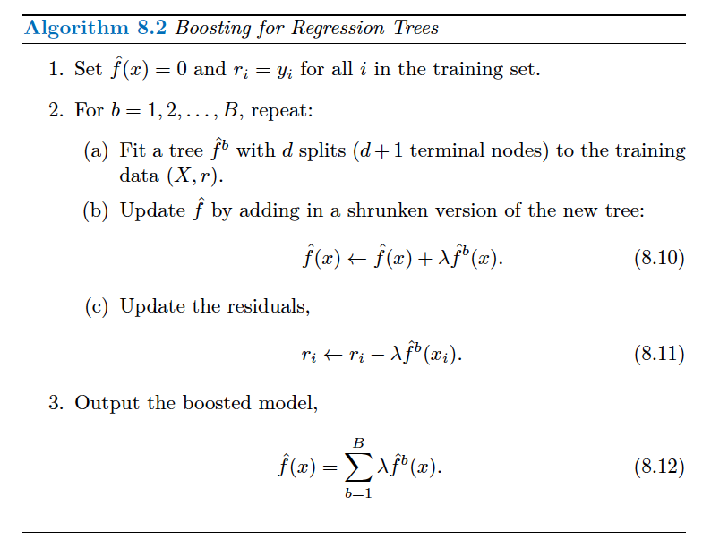

rand_forest(
mode = "unknown",
engine = "ranger",
mtry = NULL,
trees = NULL,
min_n = NULL
)Tree-Based Methods
POLI_SCI 490
Machine Learning in Political Science
Exploration ideas
Walk yourself through choosing the right tree-based method for your data
From next week’s material: Teach yourself how to tune a pre-trained neural network (or similar model) in Python
Plan for today
Digressions
- Do predictive models need to be causal?
- Submitting to our AI overlords
Talk
- From trees to random forests
- Application readings
Digressions
Do predictive models need to be causal?
Will AI make my [research expertise] go away?
Maybe?

Maybe not?

Tree-Based Methods
Regression/classification trees
Recursive binary partitioning
Recursive binary partitioning
Recursive binary partitioning
Recursive binary partitioning
Recursive binary partitioning
Recursive binary partitioning

Problems?
Deep trees overfit on the training data
Shallow trees have high bias
How to balance number of splits?
Cost complexity tuning
More problems?
Single trees are greedy
Which leads to poor prediction
Solution: wisdom of the crowds
Bagging
Random forests
Boosting
BART
Bagging
Bootstrap AGGregatING

Here’s the magic
Every bootstrap resample contains about 2/3 of the data on average
The remaining 1/3 are out-of-bag observations (OOB)
OOB observations are a natural test set for each boostrap resample
Each OOB observation gets B/3 predictions
Which we can average/majority vote to evaluate test performance
Problem?
Bootstrap resamples are correlated!
Bagged trees can get stuck on local optima
Solution: Decorrelate trees
Random forests
Draw B bootstrap resamples
For every split in each of the B trees, draw \(m\) random predictors as candidates for the split
Default is \(m = \sqrt{p}\) but can be tuned
This creates trees that still use overlapping data, but look very different from each other
Improves OOB test error
rand_forest() in {parsnip}
mtry: Number of randomly sampled predictorstrees: Number of trees (bootstraps)min_n: Minimum number of data points that are required to split a node further
Alternative
Instead of decorrelating trees
Why not treat the overlap in bootstrap resamples as an advantage?
Proposal: Build an ensemble that learns from every bootstrap
Boosting
Specify a number of trees \(B\) (these are not bootstrap resamples)
For \(b = 1\) fit the tree as usual to the training data
For \(b = 2, \ldots, B\) replace the outcome with the residuals from the previous tree
Fit a shrunken tree to the updated residuals
Repeat \(B\) times
Create predictions with \(B\)th tree
More formally (ISL p. 347)
